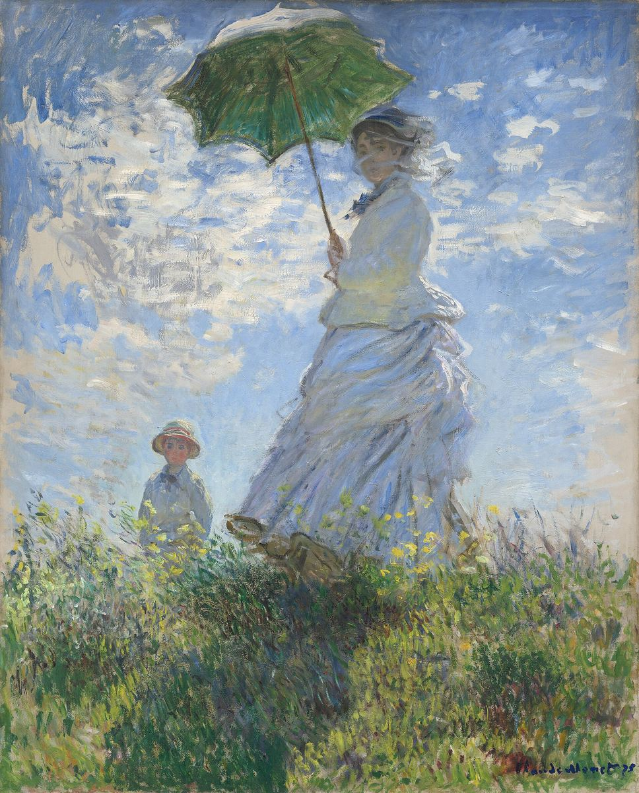

Woman with a Parasol

Palette
- Silver · your word: Silver
- Hunter green · your word: Hunter green
- Light steel blue · your word: Silver
- Light slate gray · your word: Slate
- Moss · your word: Moss
- Grey · your word: Grey
Monet painted Camille and their son Jean outdoors, probably in a single session of a few hours. The sky is quick strokes of blue and grey with bare canvas showing, and the white dress is barely white: it is pale blues and greys, with dabs of yellow reflected from the buttercups below. We still read it as a white dress in sunlight, which is color-constancy at work.
Image
Wikimedia Commons · Public domain (CC0)

Hex values are screen approximations. Every page lists its sources.